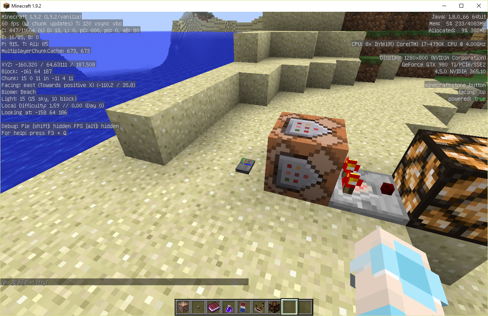

右图则为选择器的主要界面，接下来将讲解其内容。
坐标XYZ为选择器设置的所在坐标，如无则为执行者所在坐标。
体积XYZ为第二个坐标，在两坐标内的体积中选择。
最大/小半径则为选择器坐标XYZ设定后的半径中选择。
游戏模式则为玩家的游戏模式编号，-1不限制，0为生存，1为创造，2为冒险，3为旁观者，如勾上后面的“非”复选框，则相反选择。
数量为选择器逐个搜索时搜索上限，达到目标后即停止。
最大/小等级则为玩家的等级。最高/低分同理。
队伍名则为玩家所在的计分板队伍名。
名称则为实体所拥有的名称，玩家名也是名称。
标签则是1.9加入的NBT标签，生物会拥有 tags:[{"标签1","标签2"}] 来表示它们有哪些标签，这里可以利用标签的文本来选择对象。
类型则为选中实体的类型，在这里加入了所有（包括不能在这里使用）的对象。
以下为通过搜索实体对话框打开该界面才可以使用的功能。
判断实体是否处于飞行状态。
判断实体是否手持指定物品、数量、损耗/Meta值和NBT代码。
判断实体是否骑乘于指定实体类型。
如图，检测到玩家名为IceLitty，并处于飞行状态以及创造模式，还处于[-161,63,187,10]的范围内。→
/testfor @p[x=-161,y=63,z=187,r=10,m=1,name=IceLitty] {abilities:{flying:1b}}
Tip：代码如果前四个为XYZR的话可以这样简写：
/testfor @p[-161,63,187,10]